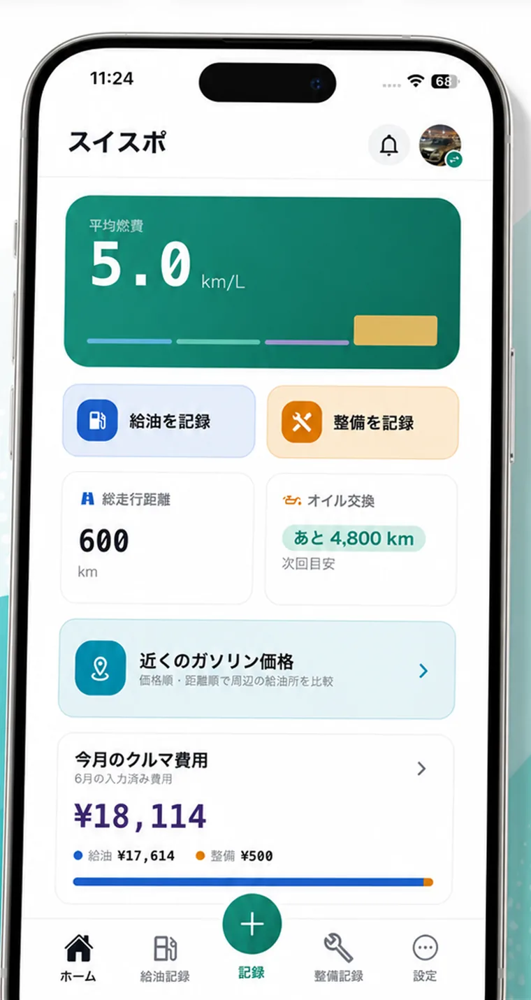
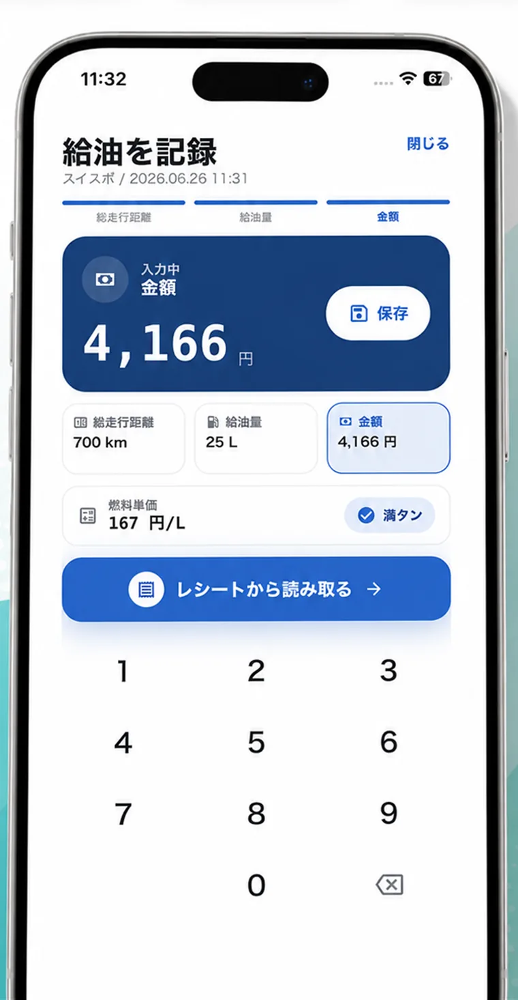
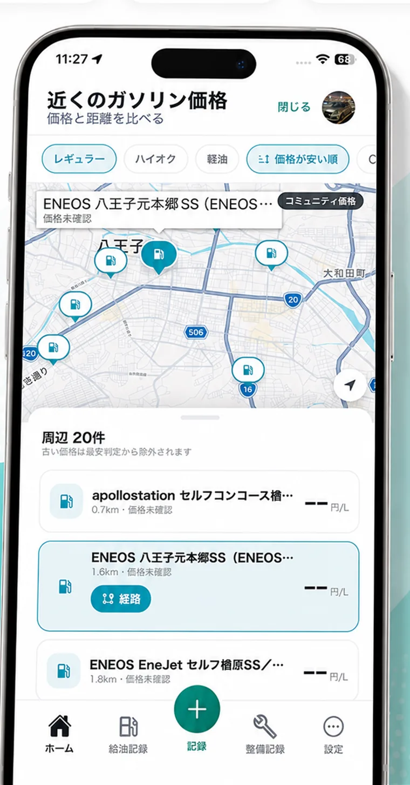

給油記録と燃費計算
走行距離・給油量・金額を入れるだけ。満タン法で実燃費を自動計算し、履歴として残せます。
給油・燃費・整備・維持費をまとめて管理。レシート読み取りや近くのガソリン価格マップも。スマホでもWebでも、あなたのカーライフを記録します。
iOS 15.1以降に対応 ・ アカウント登録なしでも使えます

記録を、あとから役立つ形に
フィドカは日本のカーオーナー向けに、円・km/L・車検やオイル交換の管理に合わせて作っています。
走行距離・給油量・金額を入れるだけ。満タン法で実燃費を自動計算し、履歴として残せます。
レシートを撮影して、油種・数量・合計金額などの入力を補助。手入力の手間を減らします。
現在地周辺の価格情報を地図で確認。レギュラー・ハイオク・軽油を切り替えて比較できます。
オイル交換・タイヤ・バッテリー・車検などを記録。次回目安を日付や距離で管理できます。
給油代と整備費を月ごと・年ごとに集計。車にかかるお金の流れを見える化します。
Proでは2台までの管理とCSVエクスポート、Pro+では3台以上の管理とクラウド同期に対応します。
画面はシンプルに
ホームでは平均燃費と次の行動をすぐ確認。給油や整備の入力は、数字と必要項目に集中できるようにしています。
平均燃費、総走行距離、次の整備目安をまとめて表示します。
よく使う記録ボタンを大きく配置し、履歴へもすぐ戻れます。
燃費や維持費の変化を見て、愛車の調子や出費を把握できます。


入力も比較も、もっと軽く
給油記録をただ残すだけでなく、次にどこで入れるか、どれくらい使ったかまで見やすくします。
レギュラー・ハイオク・軽油を切り替え、価格が安い順・距離が近い順で探せます。店舗を選んで経路案内にも進めます。
カメラでレシートを撮ると、油種・数量・金額などを読み取り、給油記録へ反映しやすくします。
無料から使える
まずは無料で給油・整備を記録。必要になったら Proで広告非表示やCSV、Pro+でクラウド同期を。Webからも登録・お支払いできます。
表示はWeb価格（税込）です。App Storeでの価格は購入画面に表示され、Web価格と異なる場合があります。アプリで購入したPro / Pro+はWebでも同じプランとして使えます。
よくある質問
無料機能はアカウント登録なしでも利用できます。クラウド同期や購入・復元など、一部機能ではログインが必要です。Webからもメールアドレスで登録・ログインできます。
はい。Webとアプリは同じアカウントで購読状態を共有します。Webで登録したPro / Pro+は、同じメールアドレスでログインすればアプリでも有効になります。クラウド同期はPro+限定です。
できます。ガソリン価格の共有は、対応バージョンでアプリ内から明示的に有効にした場合のみ利用されます。
レシート画像、読み取りテキスト全文、整備画像はクラウド同期や価格共有の対象外です。車両アイコン画像はPro+クラウド同期で復元するために送信される場合があります。詳しくはプライバシーポリシーをご確認ください。
フィドカは日本向けに、円・km/L・日本語表示を前提として作っています。
給油のたびに少しずつ、あなたの車の履歴が育っていきます。